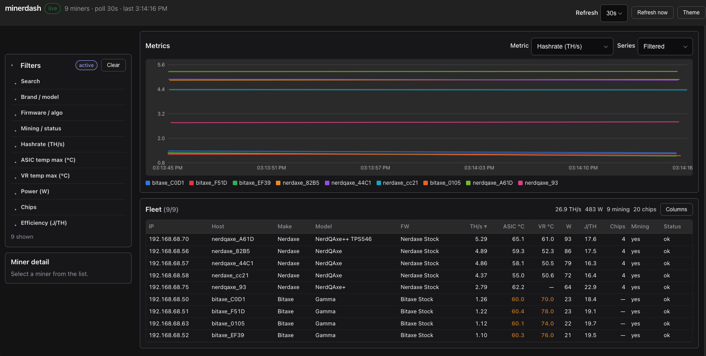

Discover & poll
Scan CIDRs, ranges, or fixed IPs. Known miners stay in the fleet until TTL, re-polled on a configurable interval.
Read-only · Go · oat.ink
Compact table, filters, miner detail, and live charts built for a wall monitor with 20+ miners. Discover on your LAN, poll continuously, stay read-only.

See the whole fleet without logging into each miner. Designed for dark rooms and glanceable status.
Scan CIDRs, ranges, or fixed IPs. Known miners stay in the fleet until TTL, re-polled on a configurable interval.
Search by IP, host, model, or serial. Narrow by brand, firmware, algo, status, hashrate, temps, power, chips, and efficiency.
Canvas charts for hashrate, temp, ASIC/VR temp, wattage, efficiency, and chips — with window presets from 4h to 7d.
Select a row for boards, fans, and pools without leaving the dashboard.
No restart, pool, or power controls in the UI. Safe to leave up on a shared monitor.
Single Docker image with asic-rs FFI baked in, or run locally with a sibling FFI build.
Docker is the fastest path. Host networking lets the container scan your LAN.
make dockerdocker run --rm -p 8080:8080 --network host \
-e MINER_SUBNET=192.168.1.0/24 \
hasherdash:latestopen http://localhost:8080cp hasherdash.example.yaml hasherdash.yaml
# edit subnets under:
# subnets:
# - 192.168.1.0/24
make docker
docker run --rm -p 8080:8080 --network host \
-v "$PWD/hasherdash.yaml:/app/hasherdash.yaml:ro" \
-e CONFIG_FILE=/app/hasherdash.yaml \
hasherdash:latestFull config, API, and local (non-Docker) setup are in the README.